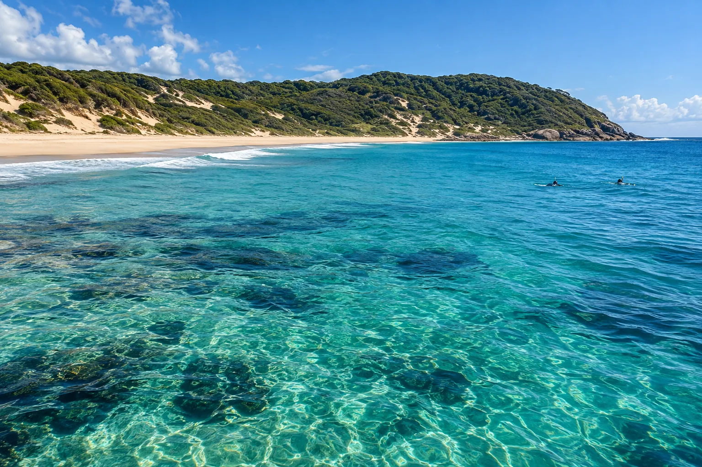

Ponta do Ouro
Maputo, Mozambique · plongée, snorkeling, surf

Réserve marine du sud du Mozambique, fréquentée par les dauphins et les requins-baleines. On y surfe aussi une droite de pointe.
- Lieu
- Maputo, Mozambique
- Niveau
- Intermédiaire
- Activités
- plongée, snorkeling, surf
- Type d'eau
- Mer / océan
- Coordonnées
- -26.84, 32.89 (position approximative du secteur)
Dangers à connaître
- Mise à l’eau à travers les vagues.
- Faune protégée : pas de contact.
Le conseil d'Ocean Buddy
Les sorties dauphins se font avec des opérateurs agréés qui respectent un code de conduite.
Ouvrir dans Ocean Buddy Télécharger sur l'App Store
Source : Fiche Ocean Buddy · septembre 2026 · à vérifier localement.